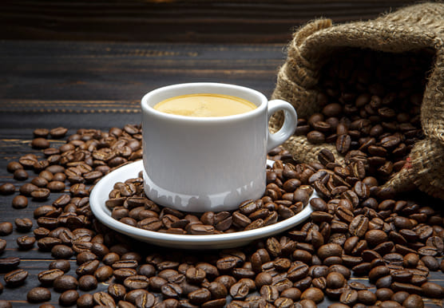

Ми віримо, що кава — це більше, ніж просто напій. Це момент натхнення, тепла та спілкування. Саме тому ми створили наш простір для справжніх поціновувачів кави, де кожне зерно має свою історію.
Наші бариста та постачальники ретельно відбирають кавові зерна з найкращих плантацій світу, дотримуючись принципів чесної торгівлі (Fair Trade) та екологічного виробництва. Ми цінуємо не тільки смак, але й шлях, який проходить кава від ферми до вашої чашки.

У нашій кав’ярні ви знайдете:
ароматну свіжообсмажену каву
сучасні методи приготування (еспресо, пуровер, френч-прес),
натуральні добавки та сиропи,
затишну атмосферу для роботи, відпочинку й зустрічей.
Ми прагнемо, щоб кожна чашка кави дарувала вам радість, а відвідування нашого сайту та кав’ярні ставало частиною вашої щоденної трад